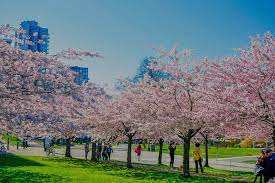
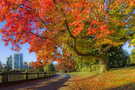

Seasons are natural divisions of the year that are characterized by distinct weather patterns, temperatures, and changes in nature. The Earth experiences four primary seasons: spring, summer, autumn (fall), and winter. Each season lasts for approximately three months and is caused by the tilt of the Earth's axis in relation to its orbit around the sun. The changing seasons not only impact the weather but also influence various aspects of life, including clothing choices, outdoor activities, agriculture, and cultural celebrations. Each season has its own unique charm and contributes to the overall cycle of nature on our planet.